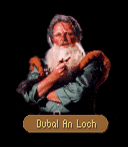
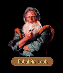

|  |
 |
|  |
|
|
|
| CHAPTER 1 - FIRST |
The dwarf drew on his pipe. Languid smoke plumed from the old codger's mouth as he studied Locklear, Owyn and Gorath each in turn. Although he had long ago lost the use of his left eye to a moredhel swordstroke, his right eye still burned brightly beneath his bushy eyebrows. DUBAL: Being as a dwarf ne'er forgets as much as his own name, I ken I recognize a strapping young man before me who last I saw was a boy. LOCKLEAR: No slight intended, but I fear I don't recall the occasion... DUBAL: As like the rest of your human kin...none among you can remember much past a week. If not for we canny dwarves you would have forgotten that you have a Kingdom at all! I fetched you out of a cellar along with a score o' womenfolk at the Battle of Sethanon! Doncha remember me, Locky? LOCKLEAR: Dubal, of course! Glad to see you! I hadn't recognized you without the eye patch. DUBAL: What's a dwarf to do? I won this scratch fair an' square and I'll be a dragon's mother before I'll cover it up again. Shouldn't have done so in the first place. Now I just sit here to jabber with that loon of a Tsurani bartender and 'ave me a few beers. Not much to do with the Mac Mordain Cadal all collapsed... A Brak Nurr has been seen down there. They'll be offering a hefty reward for its slaying I'll mite you if tradition holds, too. Something of a challenge as they are fierce beasties even by dwarven standards. LOCKLEAR: I've heard tales of these creatures of stone. Thank you, Dubal.
|
| CHAPTER 2 - FIRST |
James motioned to the figure across the room. The dwarf walked over to join them. He stood before them, eyebrows arched inquisitively. DUBAL: You think quite a bit o' yourself, doncha lad? JAMES: Perhaps. What makes you think so? DUBAL: Most folk enter a room, they looks to the left, to the right, check out the lay of a place then they choose where to go. When you come aprancin' in, you walk straight in as an arrow as if nothing could stand in your way. No one does that that's not stupid or very good with a knife... JAMES: I'm not stupid. DUBAL: Didna think ya were, but I'd wager a month's salary that you've done some time as a thief. JAMES: I suggest you lay a hefty amount on the wager. You'd win. But all that was a long time ago. I'm in the service of the Prince now. DUBAL: Are ya now? It's a shame almost. There's a new section of the Mac Mordain Cadal that's just been reopened by the workers - there was a terrible collapse there not too long ago ya know - and they say that there's a chamber there just heaped up with treasure. JAMES: Why tell me? Why not get the treasure yourself? DUBAL: That would be stealin' from meself - it's dwarven treasure after all - Besides I wouldna 'ave the desire to try. If you're no thief, I've nothing to worry in telling you, and if you are - again, I've nothing to worry about. We don' exactly leave treasure just laying about unless its for good reason. JAMES: And what reason would that be? DUBAL: Let's just say that there are certain things in this world that ya either are or are not supposed to 'ave. If ya were meant to tooch somethin', you will. If not, well then...fate sorts that sort of thing out. JAMES: I believe you're right about that, Dubal. A lesson I've learned the hard way.
|
| CHAPTER 3 - FIRST |
Dubal scowled. Bent over his pipe, he prodded a thumb into the meerschaum bowl until a weak blue plume issued forth to fill the room. With a frustrated growl he jammed the smoking thing into his mouth, muttered aloud in his thick dwarven burr. DUBAL: Set flame to a Midkemian tobacco and you'll 'ave an hour's respite from the world. Set flame to a Tsurani weed though an' you'll be lucky to get so much as gnat's spit of smoke from it. For all I know, they probably cut it 'alf an' 'alf with gwali dung. JAMES: Mind if I sit with you a while? DUBAL: Sit where ya like, lad. I don' own the stools, but if it's a ramble you're after then Dubal An Loch is the right gaffer. Have a good story to tell, laddie? JAMES: Dangerous question, but I would be willing to bet yours date back rather longer than mine. Right now I'm a bit preoccupied. We're on the trail of a murderer. DUBAL: Ach, you'll pollute tha Blue Wheel with talk like that. We're happy folk 'ere and I'm not in a mood ta have it put to ruin. Ya need to be a little more cheery, like Sumani. JAMES: The barkeep? He's a nice fellow for a Tsurani I suppose, but he seems sort of stoic... Not exactly a bundle of laughs... DUBAL: 'ees a bloddy riot, that one. Got a joke what'll split your sides and 'ave you peeing your skins in an 'eartbeat. Course, being Tsurani, 'is jokes do take a bit of getting used to. They 'ave a funny wise way o' lookin' at a thing. JAMES: I'll agree they are a strange bunch. I think the only one that I've ever met is a man they call Charles - never could pronounce his given Tsurani name. He works for Duke Martin in Crydee. DUBAL: Weel go on an' ask Sumani 'bout his joke what he told me earlier. In the meanswhile, I think I'm going to 'ave me a quick smoke in quiet for a bit. JAMES: Fair enough. Thanks for chatting with us.
|
| CHAPTER 6 - FIRST (see SUMANI) |
Owyn motioned to the figure across the room. The dwarf walked over to join them. He stood before them, eyebrows arched inquisitively. DUBAL: Oh, ya've doone it now, lad. I'd be surprised if that ole Tsurani even ever spoke to ya again. OWYN: Why? What did I say? DUBAL: I... Nothing wrong, not leastways by the standards of the Kingdom. But Sumani, now he's not of the Kingdom, is he? Least not so he 'as the Kingdom way of thinkin'. These folks from Kelewan have queer ways of looking at a thing and by me reckoning you've just insulted his honor by bringing up his getting the boot from the Garrison. OWYN: I... I didn't mean to offend him. I was just curious. DUBAL: As any would be, as any would be. But these Tsurani now, they 'old honor aways and aboove all else and if they be lacking in honor, then they feel they 'aven't the right to live. If not for a wee lie I told him a year or more ago, I suspected he would 'ave ended 'is life by now. OWYN: But what did he do to warrant a dismissal? DUBAL: I can't say as he's been exactly talkative about it, but as I'm a dwarf, I've poked around a bit and I think I've pieced the truth of the tale together. It seems aboout three years ago Sumani was mistakenly assigned the duty of standing watch over the LaMutian graveyard. Now he 'ad already stood a double watch that day so that a friend of 'is could tie the marital knot and he 'ad been up late the night before attending to a laboring calf. Unfortunately, some clod working for the Earl forgot to take note of the fact and arranged that Sumani stood watch for twenty six hours! Try as he might, he eventually fell victim to exhaustion and nodded off at 'is poost. OWYN: But it wasn't his fault. DUBAL: True, but 'tis not the end of the tale. When 'is relief came, it was a certain arrogant bastard captain whose family 'ad some feud with Sumani's family. As punishment, he forced Sumani to sleep the next night in a freshly dug grave along with a corpse recently dead of the consumption. The idiot clerk's mistake was eventually found out by Earl Kasumi, but Sumani felt as if he brought the dishonor upon 'imself and 'is former house by falling asleep. OWYN: That's terrible! And he is still living with this on his conscience? DUBAL: That's the prooblem. The Tsurani would ordinarily poison themselves or run themselves through with a thing like that on their minds. They simply 'aven't 'ad the experience of knowing 'ow to let go of a mistake and go on. Fortunately 'es learning the Kingdom way of dealing with a problem. OWYN: What do you mean? DUBAL: You'd think by meeting most o' the Tsurani that not one among them ever would laugh at anything, least of all themselves. But I've 'ad some luck getting Sumani to have some humor about the situation. In 'is own way, 'e's quite the joke teller. OWYN: You can't be serious. He's as jovial as a corpse. DUBAL: I'd not exactly say that, an' certainly not in so many words to his face. But go on, get 'im to tell you the joke 'e told me 'alf an 'our ago. I think it might lift 'is spirits a bit after you've smashed them about. G'won. In the meanswhile, I think I'm going to 'ave me a quick smoke in quiet for a bit. OWYN: Might be worth a try. Thanks, Dubal.
|
| SECOND VISIT - ALL CHAPTERS |
The dwarf frowned at them. Apparently resolute not to move from his stool for some time, he puffed heartily on his pipe. "If you'd be ever so kind, I'd prefer it if ya left me unpestered. A dwarf's pipe is a religious matter and a tavern his temple. Perhaps we can jabber a bit later."
|